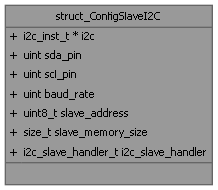

- Generated by
 1.16.1
1.16.1
The configuration data of I2C interface used as Slave. More...
#include <hw_i2c.h>

Public Attributes | |
| i2c_inst_t * | i2c = i2c1 |
| the I2C interface used in the rp2040: i2c0 or i2c1 | |
| uint | sda_pin = 06 |
| the associated gpio pin for data | |
| uint | scl_pin = 07 |
| the associated gpio pin for clock | |
| uint | baud_rate = 100 * 1000 |
| the I2C baudrate: | |
| uint8_t | slave_address = 0x55 |
| the i2c slave address at which the interface responds | |
| size_t | slave_memory_size = 256 |
| the size of the memory buffer reserved by the slave interface (default to 256) | |
| i2c_slave_handler_t | i2c_slave_handler |
| a function pointer to the IRQ i2c_slave_handler, required by pico SDK, to the program that manage the reception of i2c message by the slave interface | |
The configuration data of I2C interface used as Slave.
| uint struct_ConfigSlaveI2C::baud_rate = 100 * 1000 |
the I2C baudrate:
| i2c_slave_handler_t struct_ConfigSlaveI2C::i2c_slave_handler |
a function pointer to the IRQ i2c_slave_handler, required by pico SDK, to the program that manage the reception of i2c message by the slave interface
NOTICE: This i2c_slave_handler is the one given to NVIC IRQ map. It seems that it must be a static function defined in the main code.